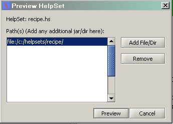

Now we will preview our helpset. Before previewing, save the project. To save, go to File -> Save All
- Click on Tools -> Preview Menu.
- A window will pop up showing you the path of your help set.
- 
- Click Preview Button.
- You will see a live preview of youe helpset in a JavaHelp window.
Generate jar file